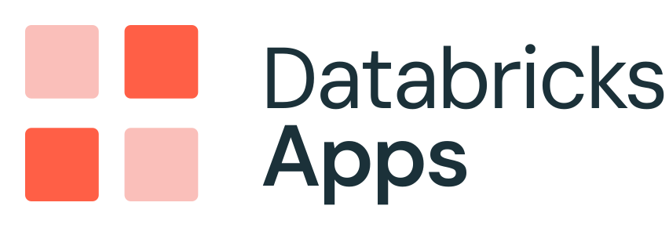
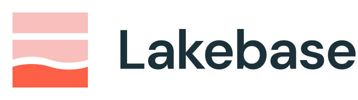
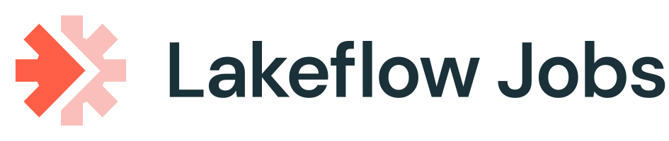
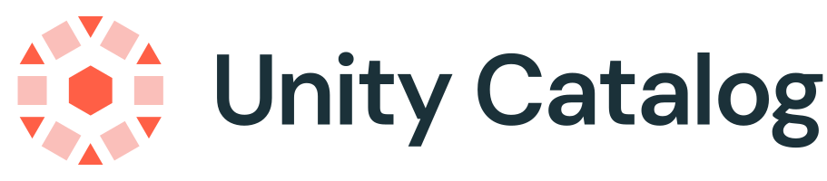
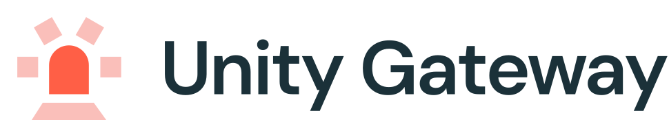
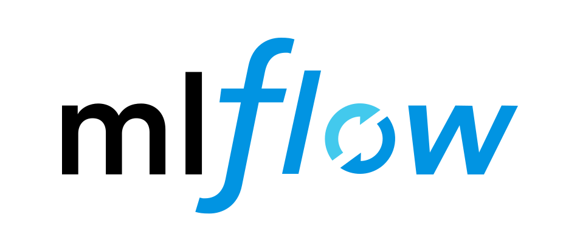

Agent Control Plane
Discover Govern Observe Attribute
A single pane of glass over every AI agent, endpoint, and knowledge base running across your Databricks account — built entirely on platform primitives. A scheduled workflow reads account-wide sources into Lakebase; the app serves them back in milliseconds.
01 · EXPERIENCE
Single pane of glass
What platform & ML teams see
Agent Control Plane app
React + FastAPI · served as a Databricks App with OBO auth

Governance
Agents
Unity Gateway
Knowledge Bases
Observability
Tools
Workspaces
Admin
Ask Genie
02 · FAST READS
Cached read store
Sub-100 ms dashboard reads

Serverless Postgres — the app's cache tables
03 · DISCOVERY
Scheduled pipeline
Materialize + snapshot, every 30 min

15 discovery tasks · Asset Bundles, every 30 min
Discovery output → synced to Lakebase
04 · GOVERNANCE
Control & cost
The auth boundary, account-wide

Access · lineage · the one auth boundary

Routing metrics, guardrails, budgets, model services
05 · SOURCES
Account-wide signal
System tables + platform APIs
System Tables
system.serving.*system.billing.usagesystem.ai_gateway.usagesystem.mlflow.*system.access.auditsystem.access.workspaces_latest

Experiments, runs & traces
Model Serving
Endpoints & inference logs
AI Search
Vector indexes & knowledge bases
Genie
Natural-language data rooms
REST APIs
Apps · budgets · UC model services
Open foundation
Any cloud · AWS · Azure · GCP
|
Delta & Iceberg
|
governed end-to-end by Unity Catalog
Agent Control Plane
·
reads only Lakebase on the request path — system tables are touched only by the scheduled discovery workflow